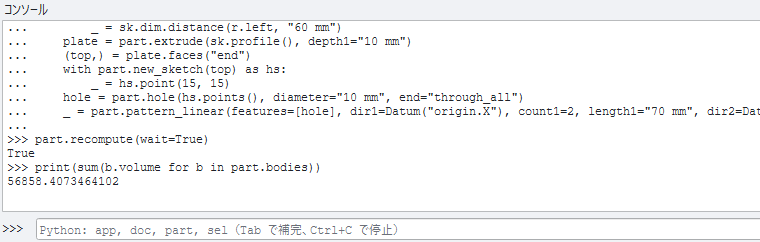
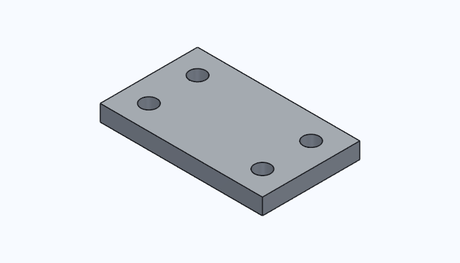
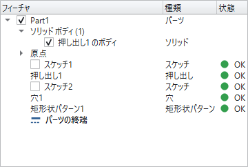
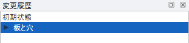
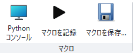

第 28 章
自動化
この章では、操作を Python で自動化する方法を説明します。コンソールからスクリプトでモデルを作り、操作をマクロとして記録し、コマンドラインから mcad を起動せずに再計算や書き出しを行います。読み終えると、決まった形を何度も作る作業や、たくさんのファイルの変換を自動にできます。
28.1 Python コンソール
画面の下に Python コンソールを出して、mcad の中で Python を実行します。スクリプトで行った操作は、画面での操作と同じに、元に戻したり、変更履歴に出たりします。
リボンの［ツール］タブ → ［マクロ］パネル → ［Python コンソール］（Alt+F11）を押します。画面の下に［コンソール］のドックが開きます。もう一度押すと隠れます。
入力欄（
>>>の右）に Python の式を入力して Enter を押します。結果が上の出力欄に出ます。
コンソールでは、次の名前がはじめから使えます。
| 名前 | 内容 |
|---|---|
app | アプリケーション全体。ドキュメントを作る・開く・まとめて 1 つの Undo にする、など |
doc | 今のドキュメント。タブを替えると、そのドキュメントに替わります |
part | 今のドキュメントの最初のパーツ（Part1） |
sel | 今の選択 |
mcad・Datum・N_ | mcad のモジュール、原点の平面などの参照（Datum("origin.XY")）、翻訳の印 |
例: 板と穴を作る
100 × 60 × 10 mm の板に、φ10 の貫通穴を 4 つ開けます。第 3 章の手順と同じ形です。次のコードを、コンソールに貼り付けます（複数行をまとめて貼り付けられます）。
with app.group("板と穴"):
with part.new_sketch(Datum("origin.XY")) as sk:
r = sk.rectangle((0, 0), (100, 60))
_ = sk.constrain.fix(r.corner(0))
_ = sk.dim.distance(r.bottom, "100 mm")
_ = sk.dim.distance(r.left, "60 mm")
plate = part.extrude(sk.profile(), depth1="10 mm")
(top,) = plate.faces("end")
with part.new_sketch(top) as hs:
_ = hs.point(15, 15)
hole = part.hole(hs.points(), diameter="10 mm", end="through_all")
_ = part.pattern_linear(features=[hole], dir1=Datum("origin.X"), count1=2, length1="70 mm",
dir2=Datum("origin.Y"), count2=2, length2="30 mm")
part.recompute(wait=True)
print(sum(b.volume for b in part.bodies))

60000 − 4 × π × 5² × 10 = 56858.4… mm³ で、理論値と一致します。



長さと角度は、単位付きの文字（
"10 mm"・"45 deg"）か、数値（ドキュメントの単位）で渡します。part.recompute(wait=True)は、計算が終わるまで待ちます。待っている間も、画面は固まりません。式の値（
'c16'のような ID）が表示されるのは、Python の対話モードの規則です。_ =で受けると表示されません。エラーは赤い文字で出ます。エラーでも、mcad は終了せず、次の入力ができます。
sys.exit()を実行しても、アプリケーションは閉じません（「コンソールからアプリケーションを閉じることはできません」と出ます）。
コンソールの操作
| キー | 動作 |
|---|---|
| Enter | 1 行を実行します。ブロック（with・for など）は ... の続きの行になり、空の行で実行します |
| ↑・↓ | 前に入力した行を呼び出します（履歴は %APPDATA%\mcad\console_history.txt に最大 500 行） |
| Tab | 名前を補完します（行の先頭では字下げ） |
| Ctrl+L | 出力欄を消します |
| Ctrl+C | 実行中なら中断、そうでなければ入力の取り消しです。計算の途中の呼び出しの中では、Python に戻ったところで止まります |
スクリプトをファイルにしておくときは、exec(open(r"C:\work\make_plate.py", encoding="utf-8").read()) で実行します。ファイルの中でも app・doc・part を使えます。
28.2 まとめて 1 つの Undo にする
with app.group("名前"): の中の操作は、1 つの Undo 項目になります。上の例の「板と穴」は、Ctrl+Z を 1 回押すと、全部が元に戻ります。
リボンの［表示］タブ → ［ウィンドウ］パネル → ［変更履歴］をクリックします。右に［変更履歴］のドックが開きます。
グループは、［初期状態］の下に 1 行（
板と穴）で出ます。今の位置の行には ▶ の印が付きます。行をクリックすると、その時点まで戻る・進みます。［初期状態］の行をクリックすると、全部が戻ります。元に戻した行は灰色の斜体で残り、クリックでやり直せます。
図 28-4 変更履歴。スクリプトで行った一連の操作が、1 つの項目にまとまります。

グループの中で例外が起きると、グループの始めの状態に戻ります（途中までの変更は残りません）。
グループの中から、
app.undo()・app.redo()は呼べません。グループを出てから使います。画面の［元に戻す］（Ctrl+Z）・［やり直し］（Ctrl+Y）は、グループの外で、普通に使えます。グループを実行している間は、画面の操作でドキュメントを変えるコマンドは無効になります（ステータスバーに「スクリプトの実行中: ドキュメントを変えるコマンドは無効です」と出ます）。終わると、また編集できます。
28.3 スクリプトの API
コンソールで使う API は、公開 API 1.0（mcad.api.script）です。1.x の間は、機能が足されるだけで、今ある名前と引数は変わりません。画面で行える操作は、すべてこの API を通ります。主な名前は次のとおりです。
| オブジェクト | 主なもの |
|---|---|
app | new_document()・open_document(パス)・documents・active_document・group(名前)・undo()・redo()・wait() |
doc | title・part・parts["Part1"]・selection・recompute()・undo()・redo()・export(形式, パス)・close()・run(アクション ID, …) |
part | name・features・feature(キー)・bodies・new_sketch(平面)・edit_sketch(スケッチ)・recompute(wait=True)、フィーチャを作る関数（下の表） |
| スケッチ （ with part.new_sketch(…) as s） | point・line・circle・arc・rect・rectangle、constrain.種類(…)（拘束）、dim.種類(…)（寸法）、profile()・points()（フィーチャに渡す参照） |
| フィーチャ | name・type_id・status・params・update(欄=値)・suppress()・rename(名前)・delete()・faces(役割)・edges(役割)・bodies() |
| ボディ | volume・area・n_faces・n_edges・bbox・ref・attrs |
sel | items・features・refs・clear() |
Datum("…") | 原点の平面・軸・点の参照（origin.XY・origin.XZ・origin.YZ・origin.X・origin.Y・origin.Z） |
フィーチャを作る part.名前(…) の関数は、画面のコマンドに 1 つずつ対応します。引数は、フォームの欄（付録 C）に対応し、help(part.hole) で一覧が出ます。必須の欄は、先頭から位置で渡せます。そのほかはキーワードで渡します。
| 関数 | コマンド | 関数 | コマンド |
|---|---|---|---|
extrude | ［押し出し］ | fillet | ［フィレット］ |
revolve | ［回転］ | chamfer | ［面取り］ |
sweep | ［スイープ］ | hole | ［穴］ |
loft | ［ロフト］ | shell | ［シェル］ |
coil・helix | ［コイル］・［ヘリカル曲線］ | draft | ［勾配］ |
rib | ［リブ］ | cosmetic_thread | ［ねじ］ |
boolean | ［結合］ | split | ［分割］ |
move_body | ［ボディを移動］ | delete_body | ［ボディを削除］ |
heal | ［修復］ | mirror | ［ミラー］ |
pattern_linear | ［矩形状パターン］ | pattern_circular | ［円形状パターン］ |
pattern_points | ［スケッチ駆動パターン］ | datum_plane・datum_axis・datum_point・datum_csys | ［平面］・［軸］・［点］・［UCS］ |
primitive_box・primitive_cylinder・primitive_sphere | ［直方体］・［円柱］・［球］ | primitive_torus・primitive_cone・primitive_wedge | ［トーラス］・［円錐］・［くさび］ |
ドキュメントを変える操作（寸法の名前・パラメータ・構成・ボディ名・外観・表示など）は、doc の関数にもなっています。名前は、操作の ID の . を _ にしたものです（doc.body_rename(element=part, body="…", name="Vacuum")・doc.config_add(element=part, name="Short")）。ほかの操作は doc.run("操作の ID", 引数…) で呼べます。
28.4 マクロの記録
画面で行った操作を、マクロとして記録して、ファイルに保存できます。保存したファイルは、スクリプトの手順として読み返せます。


リボンの［ツール］タブ → ［マクロ］パネル → ［マクロを記録］をクリックします。「…のマクロを記録しています。停止するには、コマンドをもう一度実行してください」と知らせが出ます。
記録したい操作を、普通に行います（スケッチを描く・押し出す・穴を開ける、など）。
もう一度［マクロを記録］をクリックします。「マクロの記録を停止しました（4 ステップ）」のように、ステップの数が出ます。
リボンの［ツール］タブ → ［マクロ］パネル → ［マクロを保存］をクリックし、保存先と名前を入力します。拡張子は
.mcadmacro.jsonです。
{"format": "mcad-macro", "version": 1, "app_version": "0.1.0.dev0", "api_version": "1.0",
"steps": [
{"action": "sketch.create", "bind": {"result": "$f1"},
"args": {"element": "E1", "placement": {"$d": "origin.XY"}}},
{"action": "sketch.add_geometry", …},
{"action": "sketch.edit_end", "args": {}},
{"action": "feature.add", "bind": {"result": "$f2"},
"args": {"element": "E1", "type_id": "part.extrude", …}}
]}記録するのは、記録を始めたドキュメントへの、確定した操作です。マウスの途中の動きではなく、ツールで確定した結果（スケッチの図形・押し出しの値など）です。
ファイルの保存・開く・エクスポート・終了のような、ドキュメントの外に作用する操作は、記録されません。
操作で作られたもの（スケッチ・フィーチャ）は、
$f1のような記号で書かれ、再生のときに新しく作られたものに置き換わります。記録の前からあったものを使った操作は、同じドキュメントだけで再生できます。
28.5 コマンドライン
画面を出さずに、ドキュメントの再計算の確認と、書き出しを行えます。バッチ処理や、大量のファイルの変換に使います。配布版では、python -m mcad を mcad.exe に読み替えます。
| コマンド | 動作 |
|---|---|
python -m mcad | 画面のアプリを起動します。--open などの引数は第 27 章にあります |
python -m mcad check ファイル.mcad | ドキュメントを再計算して、フィーチャの状態を一覧にします |
python -m mcad convert ファイル.mcad 出力 | 再計算して、STEP・STL などに書き出します |
run・bench | まだ使えません（スクリプトのファイルを実行する run は今後です） |
check
python -m mcad check plate_with_holes.mcad
plate_with_holes.mcad:
E1 f3 ok スケッチ1
E1 f20 ok 板
E1 f21 ok スケッチ2
E1 f34 ok 穴1
E1 f35 ok フィレット1
E1 f36 ok 面取り1
E1 body f20#0: volume 56489.1 mm^3
result: OK (0 failed feature(s))行は、パーツ・フィーチャの ID・状態・名前の順です。最後の body の行の f20#0 は、ボディのキーです（convert の --bodies で使います）。
| オプション | 動作 |
|---|---|
--json | 結果を JSON で出します（状態・メッセージ・ボディの一覧） |
--all-configs | すべての構成も計算して報告します |
--inline | 計算の別プロセスを作らず、同じプロセスで計算します |
--timeout 秒 | 計算を待つ時間（既定 600 秒） |
--cache-dir・--log-dir・--no-disk-cache | ディスクキャッシュとログの場所（既定は %LOCALAPPDATA%\mcad）、キャッシュを使わない |
--plugin・--entry-point-plugins | 外部のプラグインを読みます（プラグイン） |
convert
形式は、出力の拡張子（.step・.stp・.stl・.iges・.igs・.brep・.3mf・.obj・.ply）か、--format で決めます。check のオプションも使えます。出力先のフォルダは、先に作っておきます。
python -m mcad convert plate_with_holes.mcad out\plate.step --schema AP242
python -m mcad convert plate_with_holes.mcad out\plate.stl --resolution high
python -m mcad convert parametric_plate.mcad out\plate.step --set W=150mm
python -m mcad convert plate_configs.mcad out\plate.step --all-configs| オプション | 動作（エクスポートのダイアログと同じ値） |
|---|---|
--schema AP214|AP242 | STEP のアプリケーション プロトコル（既定 AP214） |
--unit mm|cm|m|in | 書き込む数値の単位（既定 mm） |
--frame cs:フィーチャ ID | 書き出しの座標系（UCS のフィーチャの ID）。省くとワールド座標系 |
--bodies キー,キー | 書き出すボディ（check の body の行のキー）。省くと全部 |
--resolution high|medium|low|custom | メッシュ形式（STL・3MF・OBJ・PLY）の解像度。custom のときは --surface-deviation 0.05mm・--normal-deviation 10deg |
--ascii | STL・PLY を ASCII で書きます（既定はバイナリ） |
--set 名前=値 | この書き出しのあいだだけ、パラメータの式を上書きします（繰り返せます）。ドキュメントは変わりません |
--config 名前・--all-configs | 書き出す構成を選びます（第 26 章）。--name-template・--manifest・--no-manifest でファイル名と記録を決めます |
--json | 結果を JSON で出します（書いた部品名・体積・名前の警告を含む） |
終了コードと注意
| コード | 意味 |
|---|---|
| 0 | 成功（check は全フィーチャが成功。convert は書き出した） |
| 1 | 失敗したフィーチャがある（convert は、書いたが、失敗したフィーチャか見つからない参照があり、書いた形はその前の状態） |
| 2 | ドキュメントを読めない・引数の誤り・書けない（出力先のフォルダがない、形式が分からない、など） |
| 3 | 形状エンジンが結果を返さなかった（時間切れ・繰り返す異常終了） |
| 4 | 想定外の誤り（mcad の不具合。トレースバックはログに残ります） |
コマンドラインの出力の文は英語です。日本語の部品名・フィーチャ名は、そのまま出ます。
ヘッドレスのコマンドは、ドキュメントを書き換えず、ロックもかけません。画面の mcad で開いている最中のファイルにも使えます（保存前の変更は含みません）。
28.6 プラグインを読み込む
プラグインは、フィーチャ・コマンド・出力形式などを足す Python のコードです。起動のときに、画面のアプリにも、check・convert にも読み込ませます。
python -m mcad --plugin C:\plugins\my_plugin.py
python -m mcad --plugin my_package --plugin C:\plugins\other
python -m mcad check part.mcad --plugin C:\plugins\my_plugin.py
python -m mcad --entry-point-plugins--pluginには、モジュール名（pkg.mod）、パッケージのフォルダ、.pyのファイルを渡します。繰り返して複数を読めます。形状を計算する別プロセスにも、同じプラグインが読み込まれます。--entry-point-pluginsは、インストールされた配布物がmcad.pluginsの entry point に登録したプラグインを、まとめて読みます。指定しなければ読みません。プラグインは、対応する mcad の API の版を宣言します（
PluginInfoのapi_version。たとえば">=1.0,<2.0"）。宣言がない・この mcad の API（1.0）に合わないプラグインは、読み込まれず、知らせが出ます（「プラグイン … は対応する mcad の API の版を宣言していません」「…の API の版が合いません。プラグインを更新してください」）。読み込めなかったことは、画面では警告の知らせ、コマンドラインでは標準エラーのnote:で分かります。最小のプラグインは、次の形です。
registerの中で、拡張点（フィーチャの型など）を登録します。
from mcad.api import PluginInfo
PLUGIN_INFO = PluginInfo("my.plugin", "1.0", api_version=">=1.0,<2.0")
def register(ctx):
pass # ctx に、フィーチャの型・コマンドなどを登録する